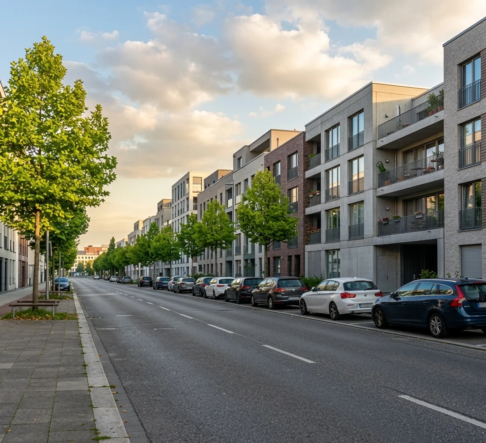

Para quem dirige
Chegue sabendo onde estacionar.
Consulte opções próximas, compare informações e escolha a vaga que combina com o seu compromisso.
- 01 Menos tempo procurando
- 02 Preços e disponibilidade visíveis
- 03 Mais previsibilidade na chegada
Plataforma colaborativa de vagas privadas
O Vagou conecta motoristas a proprietários de vagas privadas que ficam desocupadas em determinados horários. Encontre uma vaga perto de onde você precisa ir, compare as opções e reserve antes de sair de casa.
Prévia da experiência. Preço, distância e disponibilidade aparecem antes da reserva.
Trajetos não otimizados podem ser, em média, 2,7 vezes maiores que trajetos otimizados na busca por vaga.
Paidi et al., 2022 · SustainabilityUm espaço. Duas oportunidades.
O Vagou aproxima quem precisa estacionar de quem tem uma vaga disponível — com clareza para os dois lados.
Para quem dirige
Consulte opções próximas, compare informações e escolha a vaga que combina com o seu compromisso.
Para quem tem uma vaga
Disponibilize sua vaga nos períodos em que ela fica livre e acompanhe as reservas em um só lugar.
Como funciona
A mesma plataforma atende quem procura uma vaga e quem tem um espaço para oferecer.
Informe onde você precisa estacionar, a data e o período de uso.
Veja vagas próximas em mapa e lista, com distância, preço, fotos e regras de uso.
Confira o período, o preço total e as condições antes de confirmar.
Receba a confirmação e as instruções de acesso ao espaço escolhido.
Cidade e sustentabilidade
A falta de informação sobre vagas disponíveis não custa apenas tempo: gera deslocamentos extras, mais combustível, mais trânsito e mais emissões. O Vagou propõe usar melhor a infraestrutura que a cidade já tem, conectando oferta e procura.
Menos circulação desnecessária procurando vaga.
Potencial redução de combustível e emissões.
Renda para quem tem espaço ocioso e preço comparável para quem usa.
Relacionado aos ODS 11, 13 e 8

Confiança
Fotos, regras de uso e características do espaço aparecem antes de reservar.
Resumo da reserva e preço total exibidos antes da confirmação.
Após a confirmação, você recebe as instruções para entrar no espaço.
Contraste adequado, rótulos nos campos, foco visível e navegação por teclado.
Perguntas frequentes
Se a sua pergunta não estiver aqui, o projeto segue aberto a evoluir junto com os usuários nas próximas etapas.
Não. O Vagou é uma plataforma colaborativa: ele conecta motoristas a proprietários que têm vagas privadas livres em determinados horários. Os espaços são de pessoas e estabelecimentos, não da plataforma.
A busca é aberta. Você visualiza as vagas disponíveis, compara preço, distância e horário, e só decide reservar depois de ver o resumo e o preço total.
Proprietários de garagens residenciais, comerciais ou privadas que ficam desocupadas durante parte do dia. É possível informar localização, fotos, preço e os horários em que o espaço está livre.
A disponibilidade é informada pelo proprietário no anúncio e confirmada na reserva. Depois da confirmação, você recebe as instruções de acesso ao espaço escolhido.
Não. A proposta é ampliar as opções usando o que a cidade já tem, aproveitando melhor vagas ociosas e reduzindo a circulação de quem procura um lugar para estacionar.
Um espaço. Duas possibilidades.